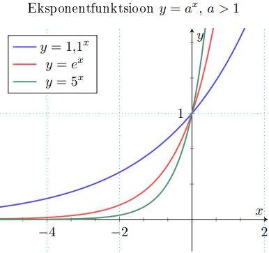

Eksponentfunktsioon on nagu astmefunktsioon, aga x ja a on vahetanud kohad. Kõige populaarsem astmefunktsioon on y = ex, mida kirjutakse ka kujul y = exp(x). y = ex kasutatakse mitmel pool loodusprotsesse kirjeldamisel, näiteks rahvastiku eksponentiaalne kasv/kahanemine, intresstide arvutamine jne.
Eksponentfunktsioon
f(x) = ax, a > 1
• X = R, Y = (0, ∞)
• üksühene
• pöördfunktsioon: f -1(x) = loga x

Murdarvu eksponentfunktsioon
f(x) = ax või f(x) = 1/ax, 0 < a < 1
• X = R, Y = (0, ∞)
• üksühene
• pöördfunktsioon: f -1(x) = loga x